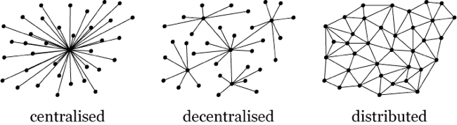

Federated and Free
Distributed and Decentralized Application Architectures
One thing that the cloud has taught me
is to plan for failure
Is your social network provider too big to fail?

"What's the worst that could happen?"
Welcome to Cloud City
Who owns your data?
Hint: Read the TOS, it may not be you
Can your data be exported in an open format?
Terms of Service
No negotiation
Subject to change at any moment
You may be banned without warning
What happens in Cloud City, stays in Cloud City
Who brokers your identity?
- your email provider?
- your phone company?
- credit agencies?
- your SSN?
- google, apple (have you rooted)
- github
Nymrights
Focused on:
- stopping discrimination
- preserving your right to privacy
German Telemedia Act
What about laws in the US?
As we move our lives online, we often lose the ability to negotiate with the businesses we deal with on a daily basis
No democratic process to work with
Only free market supply and demand to rely on
Establishing an Open Protocol for decentralized identity on the web
identity standards
open protocols, but currently access control is still generally centralized
BrowserID / Persona
- based on the VerifiedEmailProtocol
- focus on privacy
- browser integration
- provides identity bridging to support existing client auth schemes (OpenID, OAuth)
what happens when we get locked out?
Or, better yet: "what is our switching cost?"
In a way, the tech industry has recently been strugling with the same question in regard to hardware / infrastucture (IaaS)
Who is the customer? Do I have any control?
I have two words to describe this condition:
Stockholm Syndrome
As a consumer, I seek out utilities that specialize in serving my interests
- Cell phone contracts (why I buy my own cell phone hardware)
- Does your ISP prioritize their own video streaming solution over other data sharing the same wire?
- "I like being able to fire people"
- I like businesses that develop and adopt standards, enabling communities, ecosystems
Who does your online presence broker recognize as their customers?
Most are advertising or info focused
App.net - the open version of twitter?
- you are the customer!
- an incentive for profit that is well aligned with the interests of their consumers (sustainable $)?
- is adertising a valid form of monetization? (opt-in, personalized?)
- can I host my own? is there lock in?
- is it a walled garden? will it ever reach crititcal mass? if it does, will it become too big to fail?
- platform and product are still tightly coupled
Identity managers have incredible control over their platforms
- Identity and platform must be decoupled
- We need a platform as a service!
- We want open systems all the way down
Starting over from scratch
With an Open Cloud
The solution will need to be:
- open, secure
- properly monetized, good incentives
- no lock in, minimal switching cost
Reality check:
- uptime is critical
- decouple platform and product. pay for serice uptime
- interop, portability is critical
But who wants to do all of this work anyway?
Thats why we have OpenShift Online
don't like RedHat? Try GetUpCloud.com
I have a feeling that you may see some major IaaS providers offering their own OpenShift managed hosting service soon
Open Source the Cloud
- OS - liberated!
- Infrastructure - liberated! (OpenStack, RDO)
- Platform - liberated! (OpenShift)
- Integrate with OpenStack or other open systems to use your existing identity, authentication, authorization services.
- Host your own OpenID, OAuth, etc..
The cloud is a free market for services. We're seeing a lot of specialization in storage, compute, caching, hosting, monitoring - all being handled by different open and pluggable vendor solutions.
Predictions?
- Domain registries that support OAuth-style provisioning
Meanwhile, back in cloud city…

Diaspora
- decentralized social
- multi-home pub/sub style arch
- Diaspora Foundation
- http://JoinDiaspora.com
- Focus on privacy, freedom, users owning their own data
- Interoperability
Establishing a protocol, or not:
- decouple identity and data / activity
- interact with folks across social hubs (federation)
- OpenSocial (old, now proprietary?)
- tent.io (developing a protocol, asking great questions)
- pump.io (activitystreams)
- OwnCloud (Dropbox and more?)
- Tahoe-LAFS (Least-Authority FS)
Figure A:

Figure B:

Open Data formats, standards, projects to keep an eye on:
- RSS 3.0
- Activity Streams 3.0
- GNU Social
The solution will need to be…
Are we there yet?
- open, secure, reliable
- standards based
- properly monetized, good alignment of incentives
- distributed, decentralized, and scalable
- no lock in, minimal switching cost
Walls of cryptography
Types of crypto:
- Disk encryption
- File encryption
- Network i/o encryption
Who controls the lines of transmission?
ISPs, telcos, NSA (prism, xkeyscore)?
Tahoe-LAFS: provider-independent security
"The service provider never has the ability to read or modify your data in the first place: never"
"Not only is it easy and inexpensive for the service provider to maintain the security of your data, but in fact they couldn't violate its security if they tried"
Fully Homomorphic Encryption
- Support for blind processing operations
- Data stays encrypted while being transacted upon
Building communities around an open infrastucture, OS, and platform
code for america
An organization built around:
- Civic app development
- Community building
- Hackathons
- Democracy
- Open data policies
An Open App store?
practical killer apps, an open realtime office
even for the windows users
take back your data, take back your identity
- it's your content, define your own TOS
- pay for uptime, not for usage terms
- decouple, don't bundle
- treat your utilities like utilities
For information about running your own OpenShift:
Or, sign up for a free OpenShift Online account
(HTML5Dev13)
Thanks for following along! --ryanj

socuteurl.com/cherrycupcakes